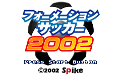

Formation Soccer 2002 (Japan)
SRAM 256K Save Format Spec gbakit Built-In 💾 MultiBoot
Cartridge Identity
- Game Code
AFMJ(FamilyAFM)- Header Title
F-SOCCER2002- Maker / Revision
EL/ rev0- ROM Size
- 4.0 MiB (4,194,304 B)
- Save Media
SRAM 256K- SHA-256
5dfa54d26c3845a49e4258b3940e69f128796815f9c613b28211ff872a665b77- Engine / SDK Group
comm-002(145 families)
Screenshots


Link Cable & Multiplayer Communications
This title contains detected communication capabilities: 💾 MultiBoot.
Detailed protocol specifications, SIO registers, Joybus commands, and MultiBoot sequences are documented in the Link & Multiplayer Reference.
- Single-Cart MultiBoot
- Single-Cartridge MultiBoot (Download Play) client/server handler · Thumb SWI 0x25 (
0xDF25):0x04fdb0,0x09907c,0x0a69ee,0x20f14e
Battery Save Format Specification
Open Full Save Format SpecDownload save-format.json
- Specification Coverage
- 4 mapped fields · 0 verified checksum(s) · Confidence: HIGH
- gbakit Built-In Support
- Built-in (AFMJ)
gbakit save verify AFMJ save.sav
gbakit save decode AFMJ save.sav
gbakit save fix AFMJ damaged.sav -o repaired.savObserved Battery Save Layout
- Fill Byte & Active Size
0xFFfill · 10,488–10,488 / 32,768 B active (entropy 4.25 bits/B)- Active Offset Ranges
0x0,0x4–0x5,0x8–0x11,0x14–0x1D,0x20–0x29,0x2C–0x35,0x38–0x41,0x44–0x4D, +8 more (846 total)- ASCII Magic / Headers
FUJII- Observed Variable Regions
- 0 bytes across 0 spans: None
- Candidate Checksum/Counter Spans
- None
ROM Assets, Compression & Audio
- BIOS Compression
- LZ77 (
0x10): 234 streams · RLE (0x30): 0 streams - ROM Pointer Tables
- 31 tables (25 pointing to validated compressed streams)
- SDK Backup Tags
SRAM_V112
Asset Map (formatkit.asset-map.v1)
Download AFMJ-r0-5dfa54d26c3845a4.asset-map.json.gz (55,054 B (53.8 KiB)) Verified PASS · 42.41% coverage
| Metric | Bytes / Value | Entries |
|---|---|---|
| Identified | 434,028 B (423.9 KiB) (10.35%) | 500 |
| Mapped | 0 B (0.00%) | 0 |
| Opaque | 1,344,608 B (1.28 MiB) (32.06%) | 1 |
| Unknown | 2,415,668 B (2.30 MiB) (57.59%) | 449 |
| Total ROM Size | 4,194,304 B (4.00 MiB) | 950 |
| Coverage % | 42.41% | — |
| Entries w/ Code Refs | 545 / 950 (57.37%) | — |
Top Identified Formats: compress.bios-lz77 (231 · 384,300 B (375.3 KiB)) · gfx.gba-palette (267 · 48,384 B (47.2 KiB)) · audio.m4a-song-table (1 · 1,152 B (1.1 KiB)) · gba.rom-header (1 · 192 B)
Largest unknown Extents (Headerless / Custom Asset Candidates)
| Offset | Size | Shannon Entropy | Code Refs |
|---|---|---|---|
0x002515C8 | 249,468 B (243.6 KiB) | 6.255 bits/B | 0 |
0x00140834 | 227,036 B (221.7 KiB) | 3.931 bits/B | 0 |
0x0008B6C4 | 175,876 B (171.8 KiB) | 7.125 bits/B | 0 |
0x00066DD8 | 149,708 B (146.2 KiB) | 6.979 bits/B | 0 |
0x0001209C | 120,168 B (117.4 KiB) | 6.845 bits/B | 0 |
gzip -dk AFMJ-r0-5dfa54d26c3845a4.asset-map.json.gz && gbakit map verify rom.gba AFMJ-r0-5dfa54d26c3845a4.asset-map.json
gbakit assets export rom.gba --asset-map AFMJ-r0-5dfa54d26c3845a4.asset-map.json -o out/Text, Fonts & Scene Data
- Primary Text Encoding
- Shift-JIS (uncompressed) (
3ASCII strings ·200Shift-JIS runs) - Font & VWF Indicators
- VWF Width Table 1bpp Font · BIOS SWIs: BitUnPack
0x10:6· LZ770x11/12:12· Huffman0x13:7· RLE0x14/15:22 - Scene & Packaging
6ROM pointer tables (≥32 entries,1≥200) ·0relativeu32TOCs ·243OAM metasprite hits
Hardware MMIO Subsystems
ppu_display0x8025fc0,0x8032fe0,0x8033084,0x80330e0,0x80336e8save_bus_sram_flash0x800adc8,0x800ae14